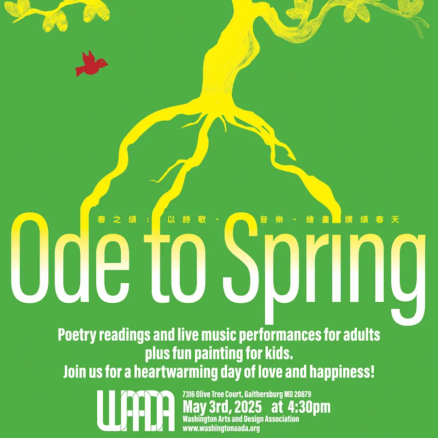

About Xiyun Du
Curator, born in 1978. He received both his Bachelor’s degree in Oil Painting from the School of Fine Arts in 2000 and his Master’s degree in Fine Arts History from Sichuan Academy of Fine Arts in 2006. He was deputy director of HOW Art Museum and deputy director of Shanghai Himalayas Museum.
His artistic views have been published in various magazines and publications, and he used to work as the chief editor of ARTTIME. He has been involved in organizing and planning several major exhibitions and projects including:
- 2021 Wuhan Zhao Bandi’s Hut, Wuhan Art Museum, Wuhan;
- 2021 Me & Beuys: Yin Xiuzhen: Braking, HOW Art Museum, Shanghai;
- 2020 Me & Beuys: Zhao Bandi’s Hut – A Noah’s Ark in the Post-Pandemic Era, HOW Art Museum, Shanghai;
- 2020 Me & Beuys: Yang Zhenzhong, HOW Art Museum, Shanghai;
- 2020 Co-constructing, Jinji Lake Art Museum, Suzhou;
- 2019 Me & Beuys: Zhou Xiaohu, HOW Art Museum, Shanghai;
- 2018 Muntadas: Asia Protocols, Three Shadows Photography Art Centre, Beijing;
- 2017 The future is here: Musical Frenzy from Madrid to Beijing, Instituto Cervantes of Beijing; Today’s Yesterday, the 1st Anren Biennale, Anren;
- 2016 Historicode: Scarcity & Supply, the 3rd Nanjing International Art Festival, Baijia Lake Museum, Nanjing;
- 2002–2006 BEIJING 798 GENESIS, Museum of Song Zhuang, Beijing.
Media
